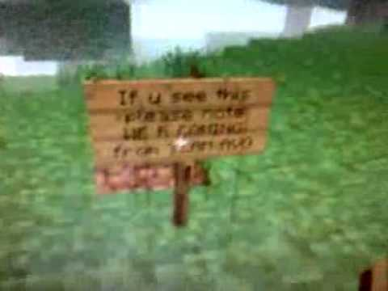
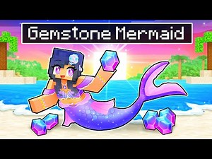

Why Minecraft has been ruined.

I need not introduce you to Minecraft; it is quite literally the most popular and lucrative single piece of entertainment media ever. Minecraft has had an arduous and prolonged development cycle, going from a single Swedish guy to a team of friends to these overtly gigantic, massively funded, uninterested, Microsoft's lab-grown programmer-mice. But at popularity at an all time high, is it because the game became better?
No; the game has not gotten better.
I am not going to be like the millions of fence-sitters out there saying that "Ohhh, the game has gotten so bad ever since b1.7.3! But the game has added so many features so it is not THAT bad!" No, every single "essayist" on YouTube can go fuck themselves, take a stance for once instead of trying to please your mentally challenged children of an audience.
To get it out of the way first, is Minecraft version b1.7.3 really the best version overall? No, of course not. It misses some features and blocks I see as fundamentals for the game overall. I see 'The End' just as a permanent part of the game. Enchanting, as well, really fits in, but I do have to admit, it goes against the main fundamentals of the game overall. The core of the gameplay is to build and to mine; enchanting is not about either of these. But I will talk about features and other gameplay implementations later on.
It was not overtly complex.
What most youtubers get yet also at the same time do not is the fact that Minecraft used to be simple and now it is overly complex. You only need to look at the various mobs they have added over the years to see the proof of this. Overly complex designs, highly detailed animations, absolutely pointless additions, and the worst part is having the audience decide on the future; history has shown plentiful times that people do not know what they want, even in Minecraft.
The figure walking in figure A is over-animated; which, is for some of you, maybe a concept unknown. Over-animated has its place in shitposts and other forms of unprofessional artistic endevours, but this is not it. In comparison to the humble pig, where the legs only go forwards and back in a sine-wave when walking, the creature on the left has everything wobbling and moving when taking stride. Its hair frollicking everywhere with (preconstructed) animated physics, it is all highly detailed, and amazingly unfit for Minecraft.
The creature on the left has absolutely overly detailed textures, things hanging off him with animated physics, all too highly complex for a simple Minecraft mob. The pig, however, is almost entirely a slob of the colour pink. It is a simple yet effective design for its real counterpart. And this is all just the design of both the animals, nevermind the features they provide in-game.
It was tightly designed.
The textures; a part of the game that every player has to gauk their eyes at. But when I gauk my eyes at how Mojang "reenvisioned" the new textures, I must vomit.

I know you can tell which one is the new one and which one is the old one; it strikes you instantaniously. Its washed out colours along with the blur that is akin to that of an eyesight of a grandpa going senile; it is simply awful. Not a single pixel is placed with any thought in mind, really. The old one was crisp and clear, a highly defined texture that felt smooth yet brittle like actual stone. The new one looks like the Andesite block did, it is not even a neutral gray anymore, it is a darker white.

The Netherrack is an improvement in some regards but in other regards it shares the same problems with all the other neo-textures in the game. One definite advantage is the clear lines seprating parts of the block, it has a good contrast that the previous version highly lacked. The old block was simply way too noisy to even see clearly. But with its good alignments also come the bad ones; such is the fact that it still has the blurry filter on top of it along with its desaturated tone. But the Netherrack is probably also the best block to showcase when discussing neo-textures against the older ones.
It was a close-knit culture
People might say that a community has nothing to do with the game's quality. Oh yeah, I am sure of that. I am sure not a single Redditor wanted to play Fortnite because of its objective quality and not because it was not well liked by the general populus because its fanbase. It is highly obvious that a game be good and have its audience be good; otherwise, your game might as well not exist.
Without a shadow of a doubt, Minecraft used to have a great community at heart; a tiny one at that. But as previously "discussed" in my other blog, gatekeeping is the source of keeping a community tightpacked and pure, once the general populus gets a hold of it, you are absolutely done for, you have lost your identity. Now you have got every Joe-Schmoe creating the most garbage-filled, ransacked piece of fucking dogshit content I have ever laid my eyes upon.

It does not take a rocket scientist to know which ones are from neo-Minecraft and which ones are from older Minecraft. Older thumbnails used to be just random screenshots from the video; or a screenshot taken, put into paint, edited a bit and put out there. It was a highly simple time where people just enjoyed seeing people play Minecraft. Seeing what people would just build or have fun hanging out.
This time is long gone. If you are not the best in your craft, you might as well quit. You either have to be the most insane shit ever put onto YouTube, akin to Dream or whoever, doing epic, insane stunts, or doing the most mundane "challenge" ever known to mankind. Which is part of the reason why Minecraft has become so boring to people as well; they want to do some insane shit in the game only to then get bored of doing the most simple tasks. It was an achievement to go to The End and beat the Enderdragon, but now you have to do it within 5 minutes with your arms strapped to your chest while singing Rick Astley's "Never Gonna Give You Up" in E-minor. And if that does not even tickle your fancy, you can always mod(ify) the game to hell to your heart's content, which goes against the purpose of this essay.
It was indie.
Notch, he was the mind behind the early stages. The guy that played Quake with griefers on his game and bet a cape of ice cream on it (down below). He has fun developing, talking to his fans about his projects on twitter, a really tightknit community. This just is not so anymore. Microsoft and Mojang are these squeaky clean developer teams that will only have their massive PR team handle any communication between the teams and the community. No random tweets from the developer talking about some idea he had, no posts pranking the community on a feature being added, no direct communication between the two parties about anything. It is a sad and dystopian view of game development, as if the people behind the game are a bunch of automated machines.
Discussing the ways people have 'tried' to fix it.
Mob Votes
Probably the most brain dead feature Mojang has added over the years is having the community vote on which mob is added. If there is something in this world that kills a game more than lack of community feedback is an overload of it. As plenty of YouTubers have shown in their video-essays about 'How to fix Minecraft' is that they all do not understand what makes the game actually good. They are not game designers, they have not undergone any form of education about development, design or coding nor do they really have the mental capacity to make up their own 'good' mob.
Plenty of these psuedo-essayists show some concept art by some designer, scream "This should be in the game! Hire this man, Mojang!" and call it a day. Nevermind the fact that it goes against the core concepts of the mob designs; overly designed, way too large, too many moving parts.
A lot of designs and concepts from Minecraft's original mob pool are that of quite broad ideas. A skeleton, a zombie, a spider, slime, witch, a snowman, a dragon, a slederman, these are all broad and easy to recognise, some would even call them clichè for being in a game as much as a gun in an FPS would be. Beyond this, other forms of mobs, such as the creeper, were made because of fun ideas Notch had while developing, the story of which is trivial at this point. At no point did Notch want the entire New York Zoo walking around in his medeival-fantasy-esque sandbox game, it would be too difficult to code for him, teehee.

Create x-update!
No, adding a cave update will not make the game better, neither will an end update, nor a sky, biomes, fantasy, electronic engineering, elements, or whatever the hell kind of update your mind thinks is remotely useful. Coca Cola has remained largely the same over its running time, and the one time they did try to improve it, it sucked so much ass they removed it entirely within the year. Adding complexity to a simple formula does not make it more unique or better, it just makes it more bloated.
Something an absolute gigantic amount of studios face are the removal updates, which is rarely or even ever seen. Game studios owning up to their mistake and removing it outright. Grand Theft Auto: Online, even after all these years, still has the Opressor Mark II, even if most people are complaining about it. They try to countermeasure it by adding in different vehicles against it or by nerfing the Mark II, but never by removing it or stripping its core features, core features that are the reason why it is hated. The same goes for Minecraft as well. The mobs during the mob votes have been complained about and complained about to no end. Phantoms were such a miserable mistake that they added a gamerule to the game to disable them, but not removing them from the game. As if game studios have this knack for not wasting some poor developer's time making one of the worst inventions in the game. Features did in fact get removed, but almost all of those were when Notch was experimenting during his time developing. The others? Microsoft removing all mentions of Notch.
More and better updates!
Complaining that "Mojang ONLY added ONE block and ONE animal" is akin to saying "Wow, I need MORE bloat in my game to keep my dopamine receptors running overdrive or else I will be BORED!". Instead of vouching for Mojang to add another kind of tree, another animal or another block, vouch for them to remove things as well. Every single update the game has ran poorer and poorer to the point where a top of the line machine could run Minecraft at 100fps in 2011 and that statement has not changed in the dacade afterwards. Vouch for Mojang to add quality of life changes, optimisation changes, lighting overhaul, bring Notch back, bring C418 back, something that is not a mob vote, a dumb block being added, another feature that overrides a feature already added, what have you.
...
While this essay might be updated in the future, the core ideas are still all the same. Now go play b1.7.3.